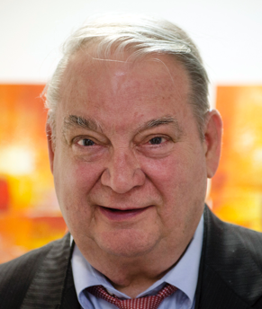
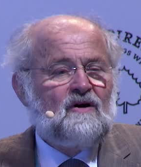
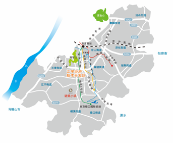
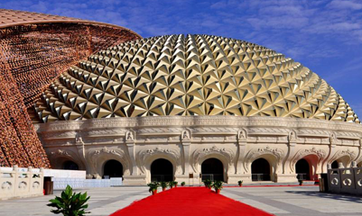
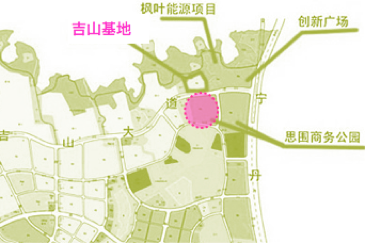
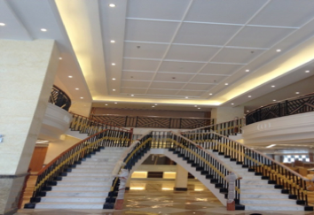
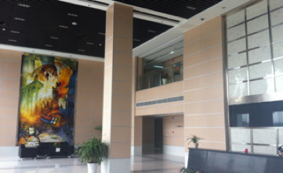
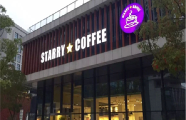

G20 Summit
NOBEL LAUREATES SCIENCE AND ART TOWN
The "Belt and Road" is a win-win way of cooperation for promoting common development and achieving common prosperity. It is a road of peace and friendship that enhances understanding and trust and enhances all-round exchanges. It is a project where China shares excellent capacity with countries along the Silk Road. Invest, build infrastructure and share the results of cooperation in the national strategy. The "innovation-driven" development strategy is an important strategy for strengthening the country after the 18th CPC National Congress. Scientific and technological innovation is a strategic support for raising the productivity and overall national strength of the country and must be placed at the core of the overall national development. In 2016, the Ministry of Housing and Urban-Rural Development, the National Development and Reform Commission and the Ministry of Finance jointly promulgated the "Notice on Carrying Out the Cultivation Work of Characteristic Towns", pointing out that by 2020 China will cultivate about 1,000 distinctive and energetic leisure travel and trade logistics , Modern manufacturing, educational technology, traditional culture, beautiful and livable towns.
Be global, act Nanjing
NOBEL LAUREATES SCIENCE AND ART TOWN
Jiangsu is located at the junction of the "One Belt and One Road", pushing forward the three internationalizations of enterprises, cities and talents and playing an important role as an important node. At the same time, as a pioneer of innovation-driven development strategy, Jiangsu has always attached great importance to scientific and technological innovation and set innovation-driven development As the core strategy, give the province the power to accelerate the construction of innovative provinces, regional innovation capability ranked the forefront of the country for many years in succession.In addition, strive to 2020, the formation of about 100 distinctive distinctive "town", Nanjing goal is 30.
Inborn Avantages
Nobel Prize personnel stay
- 
费里德·穆拉德
Ferid Murad
乔治·斯穆特
George Fitzgerald Smoot III

詹姆斯·罗斯曼
James E. Rothman
- 
厄温·内尔
Erwin Neher
丹·谢赫特曼
Dan Shechtman
Provincial leaders support
In order to promote the internationalization of top talent and high-end innovation elements, promote the industrialization of the most cutting-edge technologies and R & D achievements, promote the development process of enterprises to accelerate their going overseas, enhance their innovative capabilities and core competitiveness, promote industrial transformation and upgrading and promote economic development, Committee Li Qiang secretary, provincial governor Ma Qiu Lin, vice governor of Nobel Prize awarded the town of concern and support.
What kind of town
"Nobel Prize Town" will highlight the high-end and international, highlight the cutting-edge of science and technology and the integration of culture and the arts, with the government as a guide to the enterprise as the mainstay, to marketization mode construction and operation, It is characterized by the gathering of the top talents in all fields represented by intelligence, manufacturing, and life sciences. It takes innovation and art as its cultural connotations and supports the development of science and technology and industry as a whole to form a scientific and technological, industrial, cultural, educational and artistic Off as one of the world-class characteristics of ecological town, a national implementation of the development strategy of the country and Germany and China, Germany, an important demonstration of economic, scientific research and industrial cooperation.
Development Model
Government guidance, enterprise main body, market oriented model construction and operation.
Small Town Features
Set junuo prize winner as the representative of the top talent in various fields.
Industry Orientation
Intelligent manufacturing and life science, forming the related industrial clusters of "scientific and technological research and development, technology trade and industrial development"
Connotation Support
Highlight the sophistication and internationalization, highlight the sophistication of science and technology and the integration of culture and art
Development Goals
Forming a world class ecological town with scientific research, culture, art, leisure and tourism as a whole
Development Model
Government guidance, enterprise main body, market oriented model construction and operation.
Small Town Features
Set junuo prize winner as the representative of the top talent in various fields.
Industry Orientation
Intelligent manufacturing and life science, forming the related industrial clusters of "scientific and technological research and development, technology trade and industrial development"
Connotation Support
Highlight the sophistication and internationalization, highlight the sophistication of science and technology and the integration of culture and art
Development Goals
Forming a world class ecological town with scientific research, culture, art, leisure and tourism as a whole
The Characteristics Of The First Nobel Town
-

-
The location of Noble Town is located in Jishan District, Jiangning Development Zone. The planned construction area is one square kilometer. Considering the natural environment, environmental standards, convenient transportation, integration development and scalability.
Jishan is close to Nanjing's main expressway and other major cities around the city, the ground transport facilities; only 6 km from the airport, 10 minutes to reach; from the South High Speed Rail 10 km, 15 minutes; away from the Yangtze River in Asia's largest river - only 15 km, Transport facilities, in addition to subway traffic is also very convenient.
The Jishan Science and Technology Special Zone has complete basic facilities and an industrial support system of "four platforms and three services" of basic communication service platform, public service platform for parks, digital park management platform, campus card platform, IDC service, small and medium-sized enterprise service and park GIS service Wait. Since 2010, Jishan Science and Technology Special Zone has built 1.3 million square meters, and all kinds of carrier facilities such as research and development, office and talent apartments are available.
-

-
关于我们
hr.operation@divemath.com
-
相关新闻
-
诺奖小镇
汇聚和传播世界领先科学家的智慧，推动世界科技进步，促进新科技人才的培养，为人类服务。